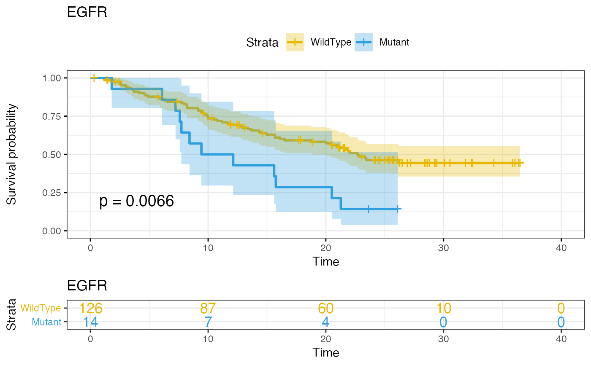
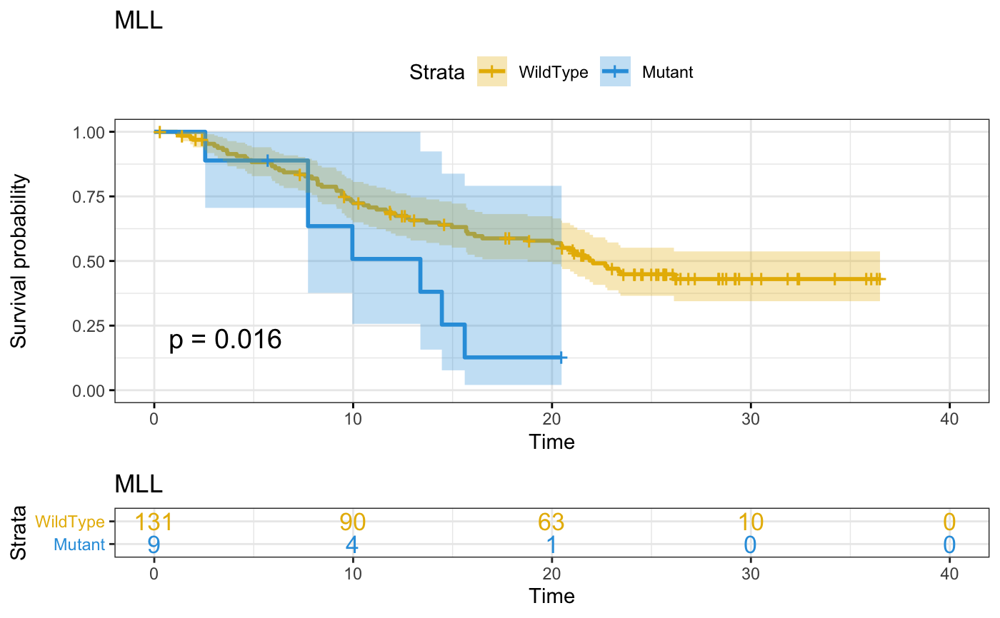
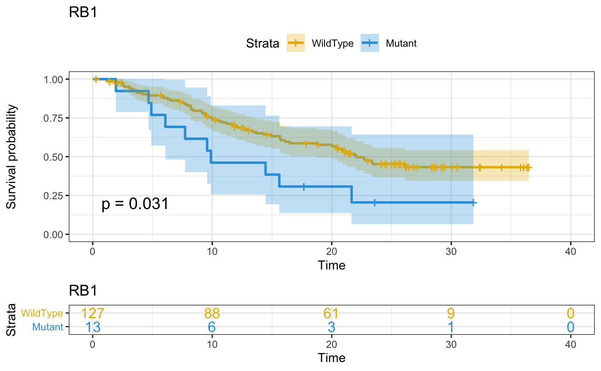
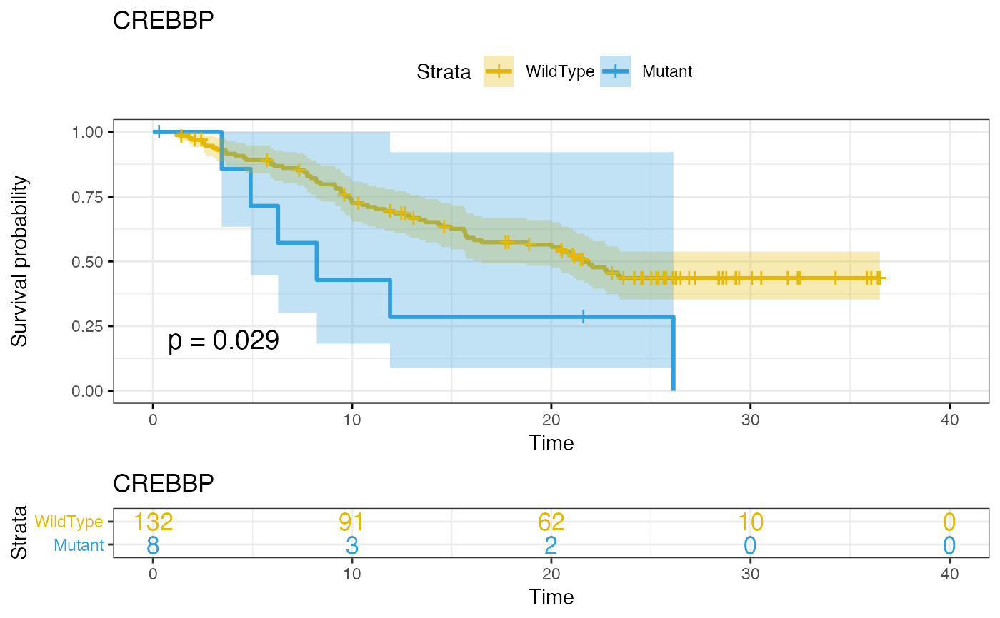
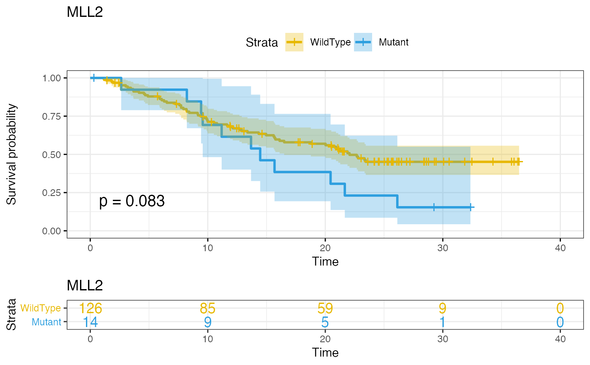
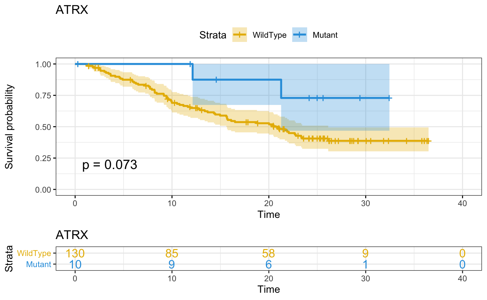
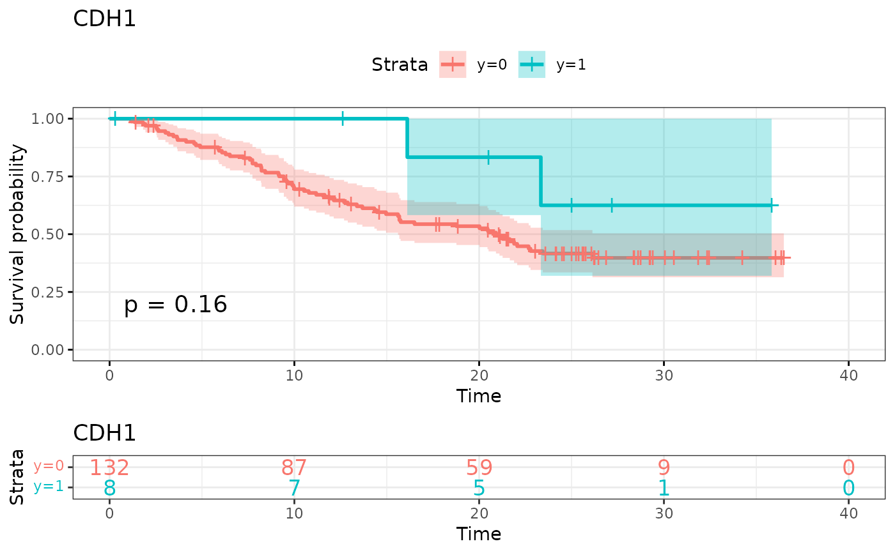
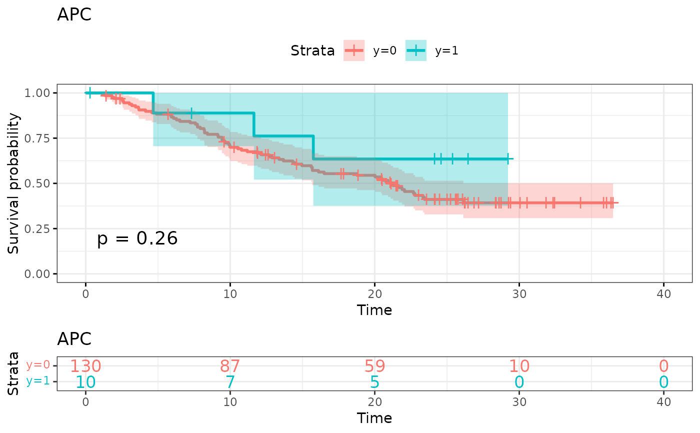
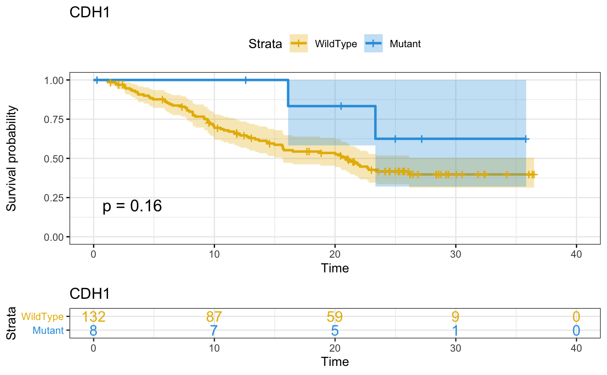

uni.cox Performs univariate cox proportional hazard model on every feature
Source:R/uni-cox.R
uni.cox.Rduni.cox Performs univariate cox proportional hazard model on every feature
uni.cox(X, surv.dat, surv.formula, filter = 0, genes = NULL)
Arguments
| X | Matrix/surv.datframe of genomic features, continuous or binary (note cannot handle categorical surv.dat for the moment). |
|---|---|
| surv.dat | a surv.dat frame containing the survival information. This can be made of 2 or 3 columns. 1 or 2 for time, and one for status (where 1 is event and 0 is no event). |
| surv.formula | a survival formula with names matching those in surv.dat eg: Surv(time,status)~. |
| filter | a numeric value between 0 and 1 (1 not included) that is the lower bound for the proportion of patients having a genetic event (only for binary features). All features with an event rate lower than that value will be removed. Default is 0 (all features included). |
| genes | a character vector of gene names that will be the only ones to be kept. Default is NULL, all genes are used. |
Value
tab A table of all the fits performed sorted by adjusted pvalues.
p An interactive plot of log(pvalue) by hazard ration.
KM List of survival plots of the top 10 most significant genes
Examples
library(gnomeR) library(dplyr) library(dtplyr) patients <- as.character(unique(mut$Tumor_Sample_Barcode))[1:200] gen.dat <- binmat(patients = patients,maf = mut)#> Warning: All samples were sequenced on the same platform. #> The spe.plat argument has been overwritten to FALSE.surv.dat <- clin.patients %>% filter(X.Patient.Identifier %in% abbreviate(patients,strict = TRUE, minlength = 9)) %>% select(X.Patient.Identifier,Overall.Survival..Months., Overall.Survival.Status) %>% rename(DMPID = X.Patient.Identifier, time = Overall.Survival..Months., status = Overall.Survival.Status) %>% mutate(time = as.numeric(as.character(time)), status = ifelse(status == "LIVING",0,1)) %>% filter(!is.na(time)) X <- gen.dat[match(surv.dat$DMPID, abbreviate(rownames(gen.dat),strict = TRUE, minlength = 9)),] uni.cox(X = X, surv.dat = surv.dat, surv.formula = Surv(time,status)~.,filter = 0.05)#> Warning: Loglik converged before variable 1 ; coefficient may be infinite.#> Warning: Vectorized input to `element_text()` is not officially supported. #> Results may be unexpected or may change in future versions of ggplot2.#> Warning: Vectorized input to `element_text()` is not officially supported. #> Results may be unexpected or may change in future versions of ggplot2.#> Warning: Vectorized input to `element_text()` is not officially supported. #> Results may be unexpected or may change in future versions of ggplot2.#> Warning: Vectorized input to `element_text()` is not officially supported. #> Results may be unexpected or may change in future versions of ggplot2.#> Warning: Vectorized input to `element_text()` is not officially supported. #> Results may be unexpected or may change in future versions of ggplot2.#> Warning: Vectorized input to `element_text()` is not officially supported. #> Results may be unexpected or may change in future versions of ggplot2.#> Warning: Vectorized input to `element_text()` is not officially supported. #> Results may be unexpected or may change in future versions of ggplot2.#> Warning: Vectorized input to `element_text()` is not officially supported. #> Results may be unexpected or may change in future versions of ggplot2.#> Warning: Vectorized input to `element_text()` is not officially supported. #> Results may be unexpected or may change in future versions of ggplot2.#> Warning: Vectorized input to `element_text()` is not officially supported. #> Results may be unexpected or may change in future versions of ggplot2.#> $tab #> Feature Coefficient Pvalue MutationFrequency FDR HR #> 1 EGFR 0.9100 0.214 0.1000 0.2135489 1.00e+00 #> 2 MLL 0.9440 0.227 0.0643 0.2266402 1.00e+00 #> 3 RB1 0.8150 0.227 0.0929 0.2266402 1.00e+00 #> 4 CREBBP 0.9380 0.227 0.0571 0.2266402 1.00e+00 #> 5 MLL2 0.6970 0.341 0.1000 0.3411547 1.00e+00 #> 6 TP53 0.5750 0.341 0.4429 0.3411547 1.00e+00 #> 7 ATRX -15.7000 0.341 0.0714 0.3411547 1.00e+00 #> 8 NF1 0.7370 0.455 0.0643 0.4551796 1.00e+00 #> 9 KRAS 0.6280 0.455 0.1286 0.4551796 1.00e+00 #> 10 CDH1 -8.4200 0.456 0.0571 0.4558340 1.00e+00 #> 11 APC -4.2300 0.617 0.0714 0.6173839 1.00e+00 #> 12 KEAP1 0.5750 0.617 0.0786 0.6173839 1.00e+00 #> 13 PTEN -3.1200 0.617 0.0571 0.6173839 1.00e+00 #> 14 TERT 0.4550 0.646 0.1357 0.6456599 1.00e+00 #> 15 EPHA5 -1.1600 0.996 0.0643 0.9957052 1.00e+00 #> 16 PIK3CA 0.2600 0.996 0.1071 0.9957052 1.00e+00 #> 17 NOTCH1 -0.7900 0.996 0.0714 0.9957052 1.00e+00 #> 18 SMARCA4 -0.5960 0.996 0.0643 0.9957052 1.00e+00 #> 19 ARID1A 0.2010 0.996 0.0786 0.9957052 1.00e+00 #> 20 POLE -0.3420 0.996 0.0500 0.9957052 1.00e+00 #> 21 FAT1 -0.1730 0.996 0.1071 0.9957052 1.00e+00 #> 22 MLL3 -0.1470 0.996 0.0643 0.9957052 1.00e+00 #> 23 STK11 0.0372 0.996 0.0857 0.9957052 1.00e+00 #> 24 PTPRT -0.0311 0.996 0.0500 0.9957052 1.00e+00 #> 25 ATM 0.0259 0.996 0.0714 0.9957052 1.00e+00 #> 26 BRCA2 -472.0000 0.996 0.0500 0.9957052 3.36e-07 #> #> $p#> #> #>#> Warning: `line.width` does not currently support multiple values.#> #> $KM #> $KM[[1]]#> #> $KM[[2]]#> #> $KM[[3]]#> #> $KM[[4]]#> #> $KM[[5]]#> #> $KM[[6]]#> #> $KM[[7]]#> #> $KM[[8]]#> #> $KM[[9]]#> #> $KM[[10]]#> #>